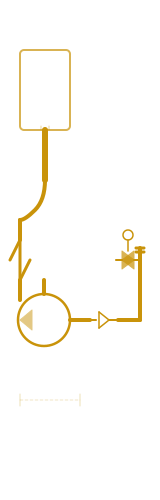
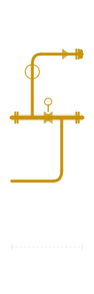

Practical knowledge
66 field-tested tips distilled from real projects, real mistakes, and real conversations with senior professionals. Short, direct, applicable on Monday morning.
Before routing any new line in a revamp project, physically walk the corridor with a tape measure. What's on the drawing is rarely what's actually there.
The best layout is the one a fitter can work on at 3am during an emergency shutdown. Every valve needs a body, every instrument needs a face.
SMAW needs 200mm around the joint. In confined brownfield spaces, consider orbital welding above NPS 1½ or GTAW for accessibility. Never design a weld you can't execute.
Pipe support locations drive routing decisions more than people realise. Lock in your structural attachment points early — changing them late costs everyone time.
A valve that's correct on the P&ID but impossible to operate from grade level is useless. Verify the operator's access route during the model review, not at FAT.
Treat every dimension on an existing drawing as unverified until you've personally checked it. The older the plant, the higher the probability that reality and documentation have diverged.
Cloud registration errors discovered back at the desk mean another site visit. Use a field tablet to do a quick sanity check on scan overlap and registration quality before you pack up.
A drain that can't be reached by a technician with a wrench will never get used. Factor in platform levels and obstruction clearances when placing drain valves.
Too close and the heat-affected zones overlap, creating potential weak points that stress analysis won't catch. This is the kind of detail that doesn't appear in codes but every good senior knows.
Guides control lateral movement; stops control axial. Using only guides on a thermal expansion loop means the pipe will find its own stop — usually a structural beam or an adjacent nozzle.